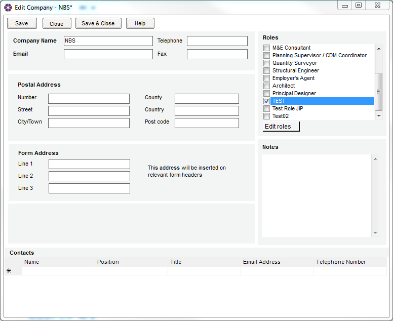

How can I add custom Roles to my job and include them in the Transmittal Sheet? |
To add a custom Role, go to Tools > Roles, enter the Role in the Role field and select Add role. To remove a Role from the list, select the Role from the list and click Delete role.
Please Note: users aren't able to duplicate existing Roles - a window will pop up to let them that the Role already exist. User can't rename existing Roles either.
Click OK to save and close the window.
Next go to the Team tab of the active Job, click on the Add member button and select the role just created from the drop down list - the new Role will be added to the Team list.

In this newly added Role, select the appropriate Company and Contact from their respective buttons, then click the Save icon to save the changes.
Now open the form that is to be issued (or any new forms going forward) and click on the Distribution List tab - the role will be included in the list.

Note that by default, the number of copies is set to zero.
Click twice in the "Copy" cell to edit the number of copies to be sent.
Please Note: The number of copies will need to be edited each time a form is issued as it defaults to zero.
This new team member will be included on all subsequent distribution lists and can have the number of copies sent adjusted in the Global Distribution List.

The team members custom role will also be reflected in the Address Book.

See also:
Roles
Job Teams tab
Form Distribution List
Transmittal Sheet
Global Distribution List
Address Book
Frequently Asked Questions